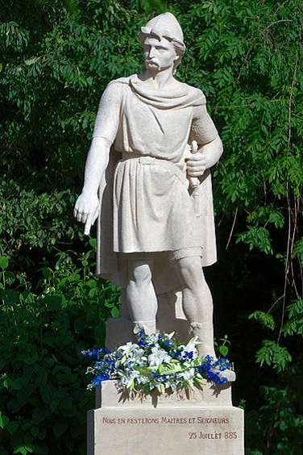
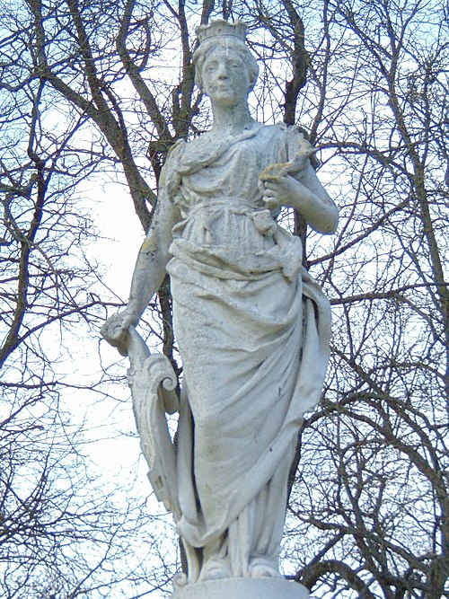

6153059136 Count Rikard I "the Fearless" de Normandie
* 932 Fecamp, France
† 996 Fecamp, France
Greve av Normandie
Blev högst 64 år
* 932 Fecamp, France
† 996 Fecamp, France
Greve av Normandie
Blev högst 64 år
22867345600 Duke Vilhelm I "Långsvärd" FitzRobert av Normandie
* omkring 891 Rouen, France
† 942 Normandy, France
Hertig av Normandie
Blev ca 51 år
* omkring 891 Rouen, France
† 942 Normandy, France
Hertig av Normandie
Blev ca 51 år

45734691200 Duke Viking Ragnvaldsson "Gånge-Rolf"
* omkring 860 Möre og Romsdal, Norge
† 931 Rouen, France
Hertig o Greve av Normandie, Vikingahövding
Blev ca 71 år
* omkring 860 Möre og Romsdal, Norge
† 931 Rouen, France
Hertig o Greve av Normandie, Vikingahövding
Blev ca 71 år

45734691201 Poppa de Bayeux
22867345601 Sprota
* 911 Rouen, France
† 940 Fecamp, France
Blev högst 29 år
* 911 Rouen, France
† 940 Fecamp, France
Blev högst 29 år